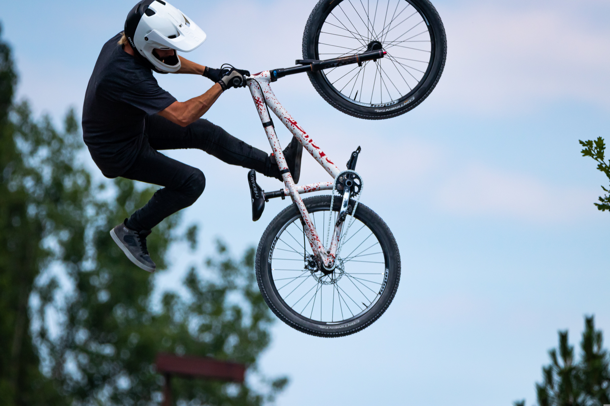
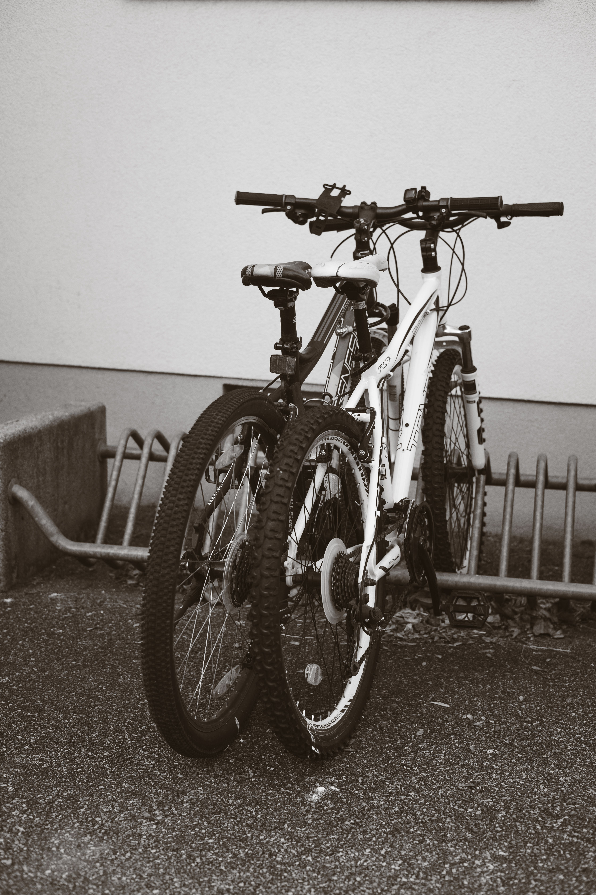
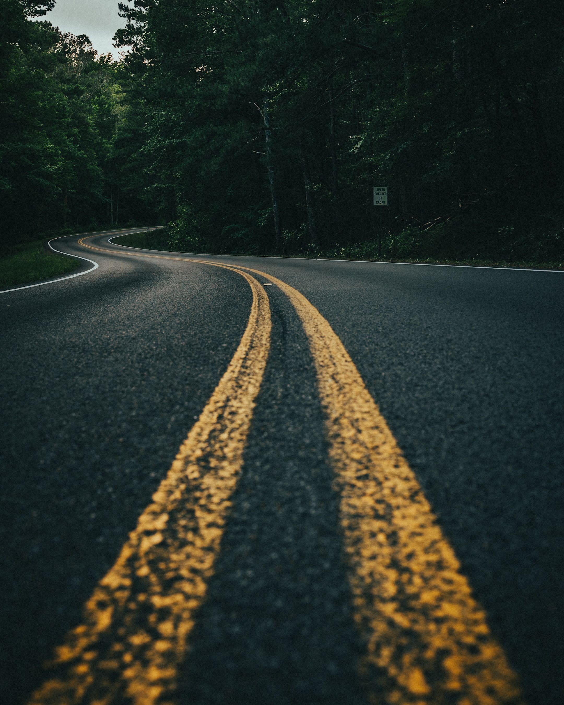

Alquiler de bicicletas
Ofrecemos una amplia variedad de bicicletas para alquilar, desde bicicletas de montaña hasta bicicletas urbanas.
Bienvenido a Rueda Libre
Somos una empresa dedicada al alquiler de bicicletas en Medellín, ofreciendo una experiencia única para los amantes del ciclismo.
Explora nuestra selección de bicicletas para alquilar en Medellín.
Ofrecemos una amplia variedad de bicicletas para alquilar, desde bicicletas de montaña hasta bicicletas urbanas.
Únete a nuestras rutas guiadas por Medellín y descubre la ciudad de una manera diferente.
Organizamos eventos especiales para amantes del ciclismo, como competencias y paseos temáticos.
Si tienes alguna pregunta o necesitas más información, no dudes en contactarnos.

Explora nuestra galería de imágenes y descubre la belleza de Medellín mientras disfrutas de un paseo en bicicleta.

Vive la experiencia de recorrer Medellín en bicicleta y activa tu alma mientras disfrutas de la naturaleza y la ciudad.

En Rueda Libre, te ofrecemos la libertad de explorar Medellín a tu propio ritmo, disfrutando de la ciudad y sus paisajes en bicicleta.